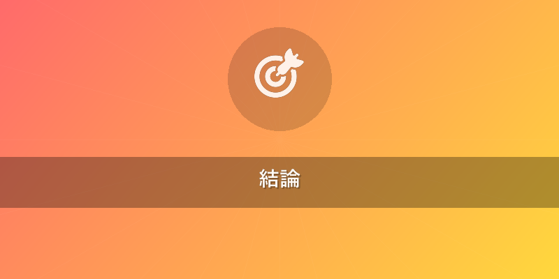
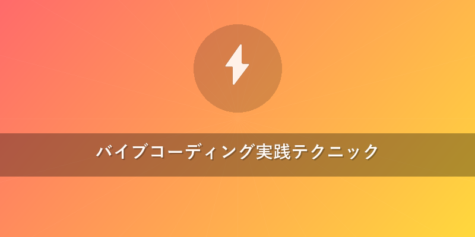
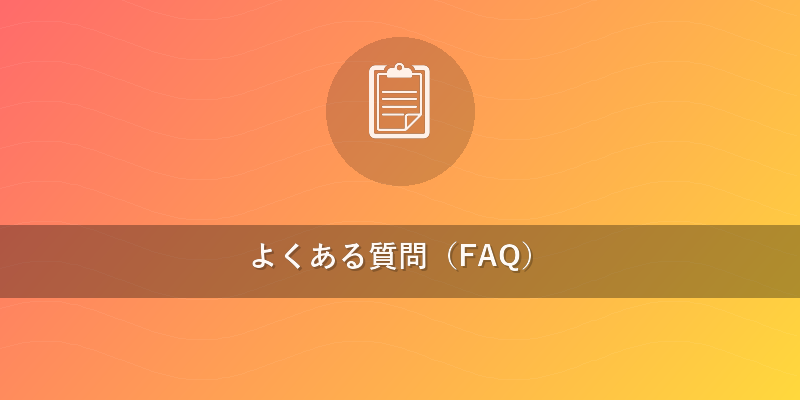

2026年最新！Lovable 使い方完全ガイド：初心者からプロまで
「AIアプリ開発は難しい」と思っていませんか？ Lovableは、そんな常識を覆す全く新しいAIアプリビルダーです。自然言語（日本語）であなたのアイデアを伝えるだけで、フルスタックのWebアプリケーションが驚くほどの速さで形になります。本記事では、AIアプリビルダーLovableの基本的な"Lovable 使い方"から、実践的なバイブコーディングテクニック、さらにはSupabase連携やStripe決済実装といった高度な機能まで、2026年最新の情報に基づいて徹底的に解説します。初心者の方もプロダクト開発者の方も、ぜひこのガイドを参考に、あなたの次の革新的なアプリをLovableで実現してください。
この記事でわかること
- Lovableを使ったAIアプリ開発の基本から応用まで、具体的な"Lovable 使い方"が体系的に理解できます。
- 自然言語で効率的にアプリを構築する「バイブコーディング」の実践的なプロンプト作成術と修正指示のコツを習得できます。
- Supabase連携によるバックエンド構築やStripe決済実装、アプリのデプロイまで、フルスタック開発の具体的な手順を学べます。

結論
Lovableは、自然言語による「バイブコーディング」を通じて、初心者からプロまで誰もが手軽にフルスタックのAIアプリを開発できる、最も効率的かつパワフルなプラットフォームです。2026年の最新バージョンでは、さらに洗練されたAIアシスタント、強化された外部サービス連携、そして直感的なUI/UXにより、開発プロセスを劇的に加速させ、あなたのアイデアを最短で実現可能なアプリケーションへと昇華させます。
本題
Lovableとは？基本概念とセットアップ手順
Lovableは、AIがあなたの指示を解釈し、コード生成からUIデザイン、さらにはバックエンド構築までを一貫してサポートする革新的なAIアプリビルダーです。プログラミングの専門知識がなくても、まるでAIと会話するようにアプリケーションを開発できるのが最大の特徴です。この開発手法を私たちは「バイブコーディング」と呼んでいます。
1. Lovableアカウントの作成 Lovableの"Lovable 使い方"の第一歩は、アカウント登録です。無料プランから始められるため、気軽にその強力な機能を体験できます。
- ステップ1: Lovable公式サイトへアクセス
- ブラウザで Lovable公式サイト（https://lovable.dev/）にアクセスします。
- ステップ2: アカウント登録
- トップページの「無料で始める」または「サインアップ」ボタンをクリックします。
- Googleアカウント、GitHubアカウント、またはメールアドレスとパスワードで登録します。
- ステップ3: 初期設定
- 簡単な質問（開発経験、目的など）に答えることで、あなたのスキルレベルに合わせたチュートリアルやヒントが表示されます。
2. ワークスペースの初期設定 アカウント作成後、開発を始めるためのワークスペースを設定します。
- ステップ1: ワークスペースの作成
- ダッシュボードから「新しいワークスペースを作成」を選択します。
- ワークスペース名を入力し、プライバシー設定（公開/非公開）を選択します。
- ステップ2: AIモデルの選択とAPIキー設定（オプション）
- デフォルトのAIモデルが設定されていますが、必要に応じてOpenAI APIキーやClaude APIキーを設定することで、より高度なカスタマイズが可能です。
- 「設定」メニューから「AIモデル」セクションに進み、必要なAPIキーを入力します。
LovableでAIアプリ開発を始める手順
Lovableの"Lovable 使い方"の核心は、自然言語での指示です。ここでは、簡単なタスク管理アプリを例に、開発の基本的な流れを説明します。
1. 新しいプロジェクトの開始
- ステップ1: プロジェクトの作成
- ダッシュボードから「新しいプロジェクト」をクリックします。
- プロジェクト名（例: 「AIタスクマネージャー」）と簡単な説明を入力し、「作成」ボタンを押します。
- ステップ2: 初期プロンプトの入力
- チャットインターフェースに、作りたいアプリの概要を具体的に記述します。
- プロンプト例: "ユーザーがタスクを追加、編集、削除できるシンプルなタスク管理Webアプリケーションを作成してください。各タスクにはタイトルと完了ステータスが必要です。フロントエンドはReact、バックエンドはNode.jsでお願いします。デザインはモダンでクリーンなスタイルにしてください。"
2. UI/UXの設計と調整 Lovableはプロンプトに基づいて初期のUIを自動生成します。ここから、具体的な"Lovable 使い方"として、視覚的に調整していきます。
- ステップ1: 生成されたUIの確認
- Lovableが生成したUIのプレビューを確認します。
- ステップ2: UIの修正指示
- チャットインターフェースで具体的な修正指示を出します。
- 修正指示例:
- "タスク追加ボタンは右下にフローティングアクションボタンとして配置してください。"
- "タスクリストの各アイテムには、完了チェックボックスと削除アイコンを追加してください。"
- "全体の色合いをネイビーとライトグレーを基調としたデザインに変更してください。"
- ステップ3: インタラクションの定義
- "タスクが完了したら、チェックボックスを押すと文字に取り消し線が引かれるようにしてください。"
- "タスク追加時にはモーダルウィンドウが表示され、タイトルを入力できるようにしてください。"
3. コードの生成とプレビュー、デバッグ Lovableは、あなたの指示に基づいてフロントエンドとバックエンドのコードを生成します。
- ステップ1: コード生成の実行
- UIデザインが固まったら、「コード生成」ボタンをクリックします。
- ステップ2: アプリケーションのプレビュー
- 生成されたコードを基に、リアルタイムでアプリケーションの動作をプレビューできます。
- 新しいタスクの追加、編集、削除など、基本機能が意図通りに動作するか確認します。
- ステップ3: デバッグと改善
- もしバグや期待しない動作があれば、チャットで具体的に指摘します。
- デバッグ指示例: "タスクを追加してもリストに表示されません。バックエンドのAPIエンドポイントとフロントエンドのフェッチ処理を確認してください。"
- LovableはAIの力で、エラーの原因を特定し、修正提案を行います。
フルスタック機能の活用：Supabase連携とStripe決済実装
Lovableは、単なるUI生成ツールではありません。SupabaseやStripeといった外部サービスと連携し、本格的なフルスタックアプリケーションを構築できます。ここが、他のAIビルダーとは一線を画すLovableの"Lovable 使い方"の真骨頂です。
1. Supabase連携によるバックエンド強化 認証、データベース、ストレージなどの機能をSupabaseで実現します。
- ステップ1: Supabaseプロジェクトの準備
- Supabaseアカウントで新しいプロジェクトを作成し、プロジェクトURLとAPIキーを取得します。
- ステップ2: LovableでのSupabase連携設定
- Lovableプロジェクトの「設定」→「外部サービス」セクションで、SupabaseのプロジェクトURLとAPIキーを入力します。
- プロンプト例: "このタスク管理アプリのデータ永続化にSupabaseを利用してください。'tasks'テーブルを作成し、'id' (UUID, プライマリキー), 'title' (テキスト), 'is_completed' (ブール値, デフォルトfalse), 'user_id' (UUID, usersテーブル参照) カラムを設定してください。"
- ステップ3: 認証機能の実装
- プロンプト例: "Supabaseの認証機能を使って、ユーザー登録とログイン機能を実装してください。認証成功後、ユーザー固有のタスクのみが表示されるようにしてください。"
- Lovableは、Supabase Authを利用したサインアップ、サインインコンポーネントと、それに対応するバックエンドロジックを自動生成します。
2. Stripe決済実装 EコマースサイトやSaaSの課金機能に不可欠なStripe連携も、Lovableなら簡単に実現できます。
- ステップ1: Stripeアカウントの準備
- Stripeアカウントを作成し、公開可能キー（Publishable key）と秘密キー（Secret key）を取得します。
- ステップ2: LovableでのStripe連携設定
- Lovableプロジェクトの「設定」→「外部サービス」セクションで、StripeのAPIキーを入力します。
- プロンプト例: "このアプリに、サブスクリプションプランを追加し、Stripe Checkoutを利用した決済機能を実装してください。月額1000円の「プレミアムプラン」を作成し、決済成功後にユーザーのプラン情報をSupabaseに保存してください。"
- ステップ3: 決済フローの実装
- Lovableは、Stripe CheckoutへのリダイレクトやWebhookによる決済結果の処理など、複雑な決済フローに必要なコンポーネントとサーバーサイドロジックを自動生成します。
3. アプリケーションのデプロイ 開発したアプリは、Lovableから直接デプロイ可能です。{{internal_link:Lovableデプロイ方法}}を参照。
- ステップ1: デプロイ先サービスの選択
- LovableはVercel、Netlify、AWS Amplifyなどの主要なクラウドプラットフォームとの連携をサポートしています。
- プロジェクト設定から「デプロイ」セクションに進み、希望するサービスを選択します。
- ステップ2: デプロイ設定
- 各サービスのAPIキーやトークンを入力し、デプロイブランチ（例: main）を設定します。
- ステップ3: デプロイ実行
- 「デプロイ」ボタンをクリックすると、Lovableが自動的にコードをビルドし、選択したプラットフォームにデプロイします。
- デプロイ完了後、公開されたアプリケーションのURLが提供されます。

バイブコーディング実践テクニック
Lovableの"Lovable 使い方"を最大限に引き出すには、AIとの対話であるバイブコーディングのコツを掴むことが重要です。
1. プロンプトの書き方 明確で具体的なプロンプトは、AIが意図通りのコードを生成するための鍵です。
- 役割（Persona）を明確にする: "あなたはベテランのフルスタック開発者です。" "あなたはUI/UXの専門家です。"
- タスク（Task）を具体的に指示する: "〜を作成してください。" "〜を変更してください。"
- 背景・制約（Context/Constraints）を提供する: "ReactとTailwind CSSを使用してください。" "モバイルファーストでお願いします。"
- 例（Examples）を示す: "GitHubのTodoリストのようなUIにしてください。"
- 出力形式（Format）を指定する: "JSON形式で返してください。" "コードブロックでお願いします。"
- 段階的に指示する: 一度にすべてを伝えようとせず、UI、機能、バックエンドと段階的に指示を出すことで、AIの理解度が高まります。
- NG例: "すごいSNSを作って。"
- OK例:
- "ユーザーがテキストと画像を投稿できるシンプルなSNSフィード画面を作成してください。"
- "各投稿に「いいね」ボタンとコメント機能を追加してください。"
- "投稿データはSupabaseに保存し、リアルタイムで更新されるようにしてください。"
2. 修正指示のコツ 生成された結果に満足できない場合も、具体的な指示でAIを導きます。
- 問題点を具体的に指摘する: "ボタンの色がブランドカラーと一致していません。" "この機能が動作しません。エラーメッセージはXです。"
- 改善策を提示する: "ボタンの色を#FF0000に変更してください。" "API呼び出しのURLを/api/v2/tasksに修正してください。"
- 質問を投げかける: "この部分のロジックを最適化する方法はありますか？" "このデザインはモバイルでどのように見えますか？"
- 「なぜ」を伝える: "ユーザーが誤ってデータを削除しないよう、削除前に確認ダイアログを表示してください。"
3. 効率的な開発フロー Lovableを最大限に活用するためのワークフローです。
- アイデアを具現化: 大まかなコンセプトをAIに伝え、初期バージョンを生成させます。
- UI/UXの反復: 生成されたUIをプレビューしながら、デザインとインタラクションを細かく修正します。
- 機能の実装とテスト: 必要な機能（例: 認証、データ操作、決済）を段階的に追加し、各ステップで動作確認を行います。
- 外部サービス連携: SupabaseやStripeなど、必要な外部サービスとの連携を指示し、統合します。
- デプロイと公開: 開発が完了したら、Lovableから直接アプリケーションをデプロイし、公開します。
- 継続的な改善: ユーザーからのフィードバックや市場の変化に合わせて、Lovable上でアプリを簡単に更新・改善できます。
他のAIビルダーとの比較
Lovableのユニークな"Lovable 使い方"を理解するために、競合AIビルダーとの比較を見てみましょう。
| AIビルダー名 | 特徴 | 開発手法 | フルスタック対応 | 強み | 弱み |
|---|---|---|---|---|---|
| Lovable | 自然言語によるバイブコーディング | 自然言語（プロンプト） | 高 | - 全ての開発フェーズをAIで完結 | |
| - Supabase/Stripe連携など高度なフルスタック機能 | |||||
| - 初心者からプロまで対応 | - 最新機能へのキャッチアップが必要 | ||||
| - AIへの適切な指示出しに慣れが必要 | |||||
| Bolt.new | バックエンドAPIとデータベースの高速生成 | 自然言語（プロンプト） | 中 | - バックエンドの構築に特化 | |
| - 高速なAPI開発 | - フロントエンドの生成機能は限定的 | ||||
| - UI/UXの細かい調整は別途必要 | |||||
| Replit Agent | AIによるコーディングアシスタント、共同開発環境 | コード編集 + 自然言語 | 高 | - 既存コードベースへのAI支援 | |
| - リアルタイム共同開発 | |||||
| - 多言語対応 | - ある程度のコーディング知識が必要 | ||||
| - UI生成は限定的 | |||||
| v0 | コンポーネントレベルでのUI生成 | 自然言語（プロンプト） | 低 | - 高品質なUIコンポーネントの高速生成 | |
| - Shadcn/UIとの連携が強力 | - アプリ全体のロジック生成は限定的 | ||||
| - フルスタック開発には他のツールと併用が必要 | |||||
| Claude Artifacts | IDE内でAIと対話しながらコードを生成・修正 | 自然言語（チャット） + コード | 中 | - Claudeの高度な言語理解力 | |
| - IDE内でのシームレスな対話型開発 | - UI生成機能は限定的 | ||||
| - フルスタックフレームワークとの深い統合はこれから |
この比較からわかるように、Lovableは特に「自然言語だけでフルスタックのAIアプリ開発を完結させたい」ユーザーにとって最適なソリューションです。{{internal_link:Lovableとv0の違い}}についてさらに詳しく知りたい方はこちら。

よくある質問（FAQ）
Q1: Lovableは本当に無料で使えるの？
A1: はい、Lovableには無料プランが用意されており、基本的な機能を使ってAIアプリ開発を始めることができます。一定の利用制限はありますが、バイブコーディングの体験や簡単なプロトタイプ作成には十分です。本格的な開発や商用利用を検討する際は、より高度な機能やリソースが利用できる有料プランへのアップグレードを推奨します。
Q2: 開発したLovableアプリは商用利用できる？
A2: はい、Lovableで開発されたアプリケーションは商用利用可能です。Lovableはあなたのアイデアをビジネスに繋げるためのツールとして設計されています。ただし、有料プランの利用が推奨されており、著作権やライセンスに関する詳細はLovableの利用規約をご確認ください。生成されたコードはあなたのプロジェクトの一部として扱われます。
Q3: プログラミング知識が全くなくてもLovableでアプリ開発は可能？
A3: はい、プログラミング知識が全くなくてもLovableでアプリ開発を始めることは十分に可能です。Lovableの核となる「バイブコーディング」は、自然言語での指示をAIが解釈し、コード生成を行うため、プログラミング言語の文法を覚える必要はありません。ただし、より複雑な要件やカスタマイズに対応するには、Web開発の基本的な概念（例: フロントエンド、バックエンド、API、データベースなど）を理解していると、AIへの指示出しがよりスムーズになり、効率的な開発が期待できます。{{internal_link:Lovable初心者のための学習ロードマップ}}もご参照ください。
おすすめサービス・ツール
この記事で紹介した内容を実践するために、以下のサービスがおすすめです。
※ 上記リンクからご利用いただくと、サイト運営の支援になります。
まとめ
本記事では、AIアプリビルダーLovableの"Lovable 使い方"を、アカウント登録からフルスタック機能の活用、そして実践的なバイブコーディングテクニックまで網羅的に解説しました。
Lovableは、自然言語だけで複雑なAIアプリ開発を実現する、まさに未来のアプリ開発ツールです。プログラミングの壁を感じていた方も、開発プロセスを劇的に加速させたいプロフェッショナルも、Lovableはあなたの強力な味方となるでしょう。特にSupabase連携やStripe決済といった高度な機能は、あなたのアイデアを単なるプロトタイプではなく、実際に稼働するビジネスアプリケーションへと昇華させます。
ぜひ今日からLovableに登録し、あなたのアイデアをバイブコーディングで形にする一歩を踏み出してください。AIがあなたの創造力を最大限に引き出し、夢のアプリ開発を実現する手助けをしてくれるはずです。未来のアプリ開発は、もう始まっています！